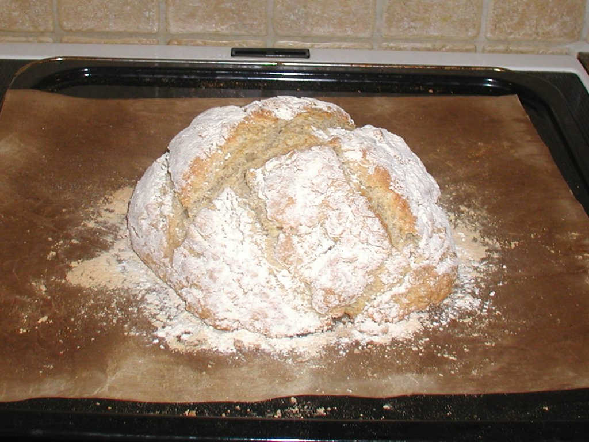
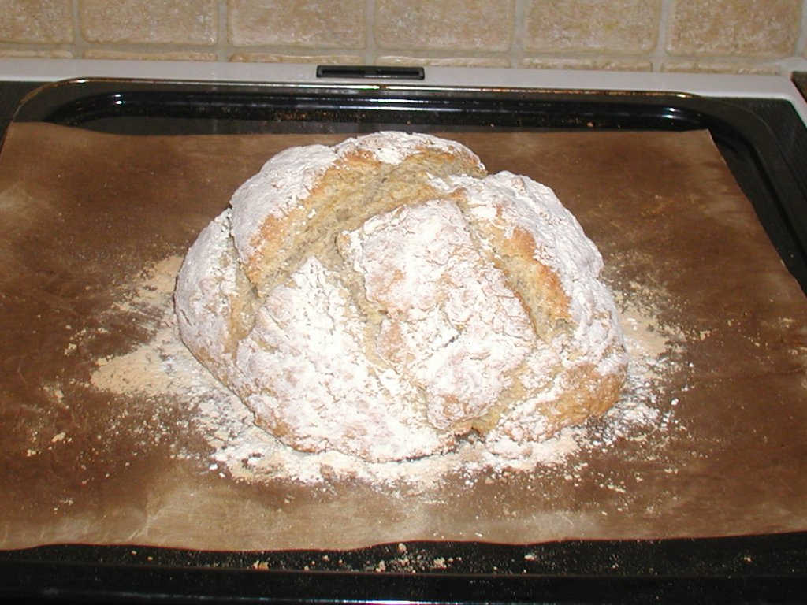
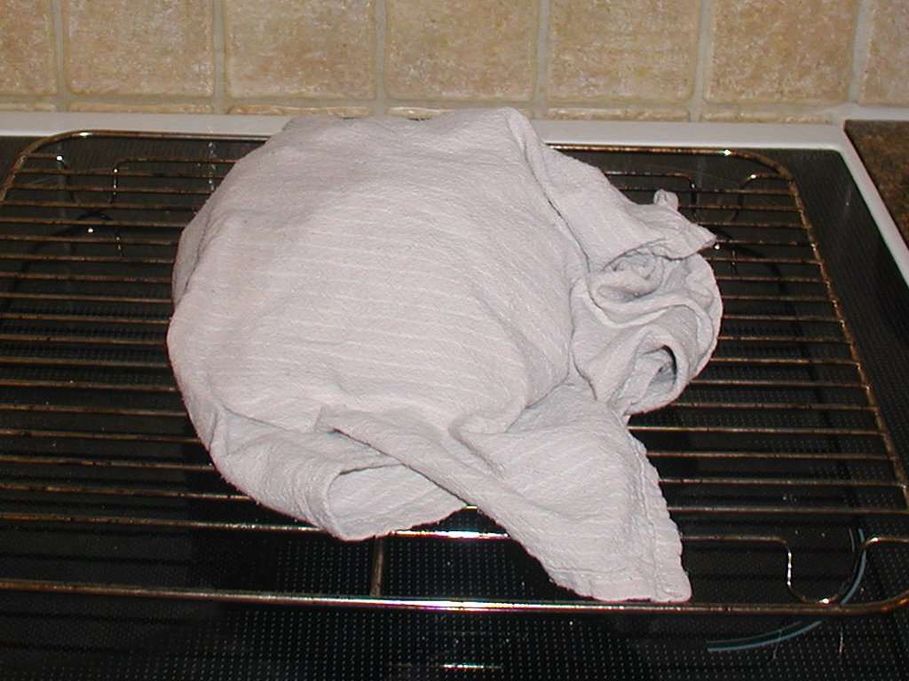
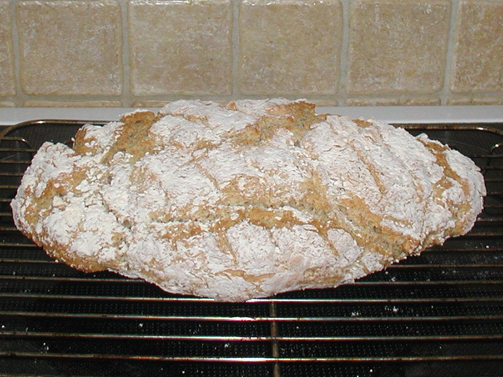
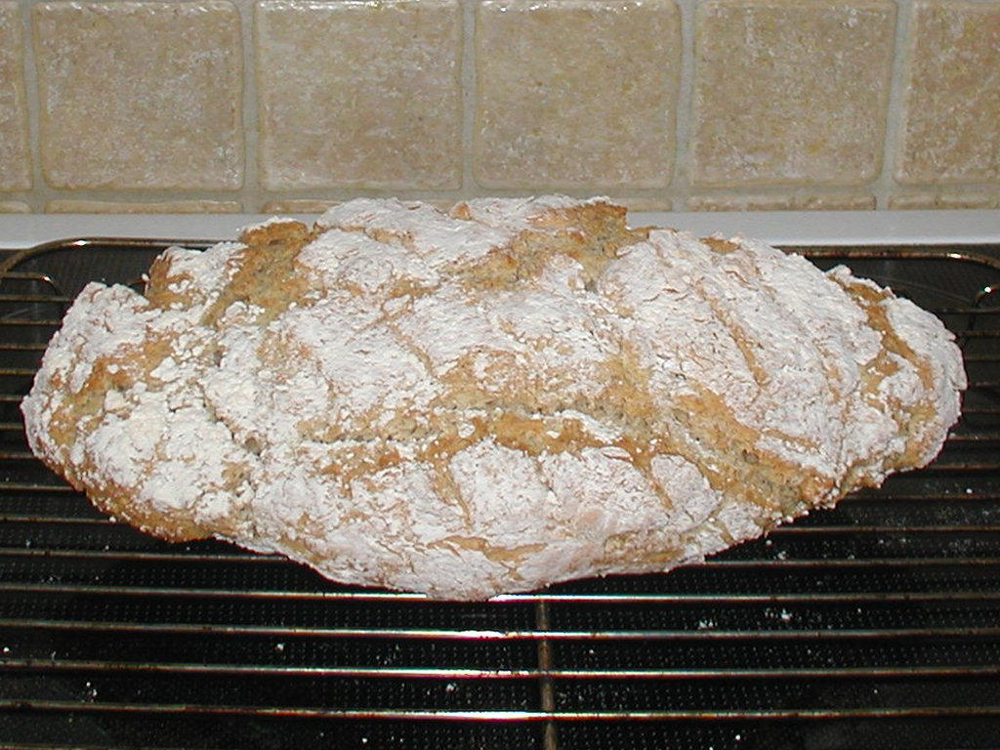

Snydebrød
Hurtigt, hurtigt!
1 time fra start til slut -
incl klargøring af ingredienser, røring, bagning og hviletid.
Du har sikkert travlt, så lad os skynde os videre :-)

Du har sikkert travlt, så lad os skynde os videre :-)

Lige 3 ting først!
-
Gør alt klar!
Start med at tænde ovnen på 225°C.
Find alle ingredienser og grej frem. -
Følg opskriften!
Og brug en præcis vægt. Der er ikke tid til at lave fejl.
I modsætning til når man bager gærbrød, så kan man ikke sjusse sig frem og drysse lidt ekstra mel i eller tilsætte lidt mere vand - det er knald eller fald.
Hvis du kommer bare en anelse for meget natron i, kommer brødet til at smage frygteligt. Derfor er det bedst at veje natronet i stedet for at måle med teskeer - det er ret upræcist. -
Arbejd hurtigt!
Hævemidlet i opskrifterne begynder at reagere, med det samme ingredienserne er blandet sammen, og hvis ikke du er hurtig, går gassen af før bagning.
Start med at blande tørstof og væske hver for sig. Når først de to ting er i berøring med hinanden, så skal det gå stærkt.
Hvis du følger disse simple regler, så kan det ikke gå galt!
Grundopskrift
Ingredienser, 1 lille, rundt brødTørstof:
|
Ingredienser, 1 stort, aflangt brødTørstof:
|
Fremgangsmåde
-
Tænd ovnen på 225°C.
Du behøver ikke vente på, at den bliver varm. -
Find alt grejet frem:
- Bageplade med bagepapir
- En stor røreskål (5 eller 6 L)
- Piskeris
- En solid grydeske
- En skarp kniv
- Stil bagepladen med bagepapir ved siden af vasken.
-
Bland tørstoffet grundigt i røreskålen.
Brug piskeriset.
Fra nu af skal du arbejde hurtigt!
-
Vej kærnemælken i og rør med den solide grydeske,
langsomt de første slag men skynd dig til sidst.
Max 1 minut!
Afhængig af meltypen kan dejen virke tør og hænger måske knap nok sammen, men det er normalt!
Fald ikke for fristelsen til at tilsætte mere væske. -
Klask dejen over på bagepladen.
Hvis der er noget mel, der ikke har suget væske, så lad det blive i skålen! Det er for sent at gøre andet ved det nu.
-
Eventuelt:
Kom vand på hænderne og saml dejen til en halvkugle (lille brød) eller en aflang klat (stort brød).
Glat de værste knotter ud, ellers kan de blive meget hårde. -
Eventuelt:
Drys lidt mel over (det gør skorpen mindre hård).
Skær evt et par snit i toppen af dejen med en skarp kniv. -
Stil pladen midt i ovnen.
Pyt med hvis ovnen ikke er nået helt op på 225°C. -
Bag i 30 minutter (lille brød) eller 40 minutter (stort brød).
Ryd op imens.
-
Tag pladen ud og flyt brødet over på en rist
 Lad det køle lidt (mindst 15-20 minutter), før du begynder at skære det.
- Hvis du kan lide hård skorpe, så lad brødet hvile uden noget over.
- Hvis du vil have en blød skorpe, så dæk brødet med et viskestykke efter de første 10 minutter. Hvis du har drysset mel på, så bank det løse af først.
-
Hvis du er kommet til at bage brødet alt for længe,
så lad det køle i en lukket plastikpose på risten,
så du holder mest muligt på den sidste fugt.
Også her skal du banke det løse mel af, ellers suger det fugten.
Varianter
Man kan godt lave om på opskriften,
men man skal være lidt forsigtig.
Her er et par eksempler på varianter: 
-
Allervigtigst er det, at natron behøver syre!
Dvs, hvis man bruger en væske,
som ikke indeholder syre (det gælder fx vand eller mælk),
så skal man bruge bagepulver, ikke natron!
Bagepulver består nemlig af en blanding af hævemidler (natron og lignende) plus en eller flere tørrede syrer. Derfor skal man bare tilføje vand, det opløser syren, som straks begynder at reagere med hævemidlerne.
-
Og hvis man bruger et mix af væsker,
så skal de shakes eller røres sammen,
før man hælder det i tørstoffet.
Det er fordi man ikke rigtig ælter dejen.
-
Man skal også være forsigtig med at tilsætte ikke-hævende meltyper,
for det er i forvejen svært at få brødet luftigt nok.
Men man kan godt fx bruge fuldkornshvedemel i stedet for hvidt hvedemel.
Her er et par eksempler på varianter: 
Ølbrød, lille og rundtTørstof:
|
Dobbelt Ølbrød, aflangtTørstof:
|
Vandbrød, lille og rundtTørstof:
|
Vandbrød, stort og aflangtTørstof:
|
2013-01-26